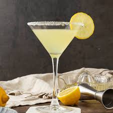

The Limoncello Lemon Drop is a vibrant, citrusy cocktail that blends sweet limoncello, crisp vodka, and fresh lemon juice. Served in a sugar-rimmed glass, it's smooth, tangy, and refreshingly elegant.
- Limoncello 2oz
- Vodka 1oz
- Lime juice 1oz
- Simple syrup 1/2 oz
- Ice cubes
- sugar for rimming the glass
- Lemon twist or slice for garnish
- Rim a chill martinni or coupe glass with lemon juice and sugar
- Fill a cocktail shaker with ice
- Pour the limoncello, vodka, lemon juice and simple syrup
- Shake well
- Mix gently
- Strain and garnish with a lemon twist